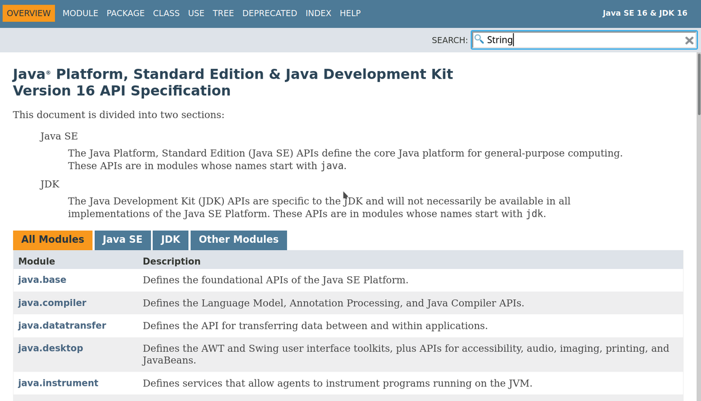
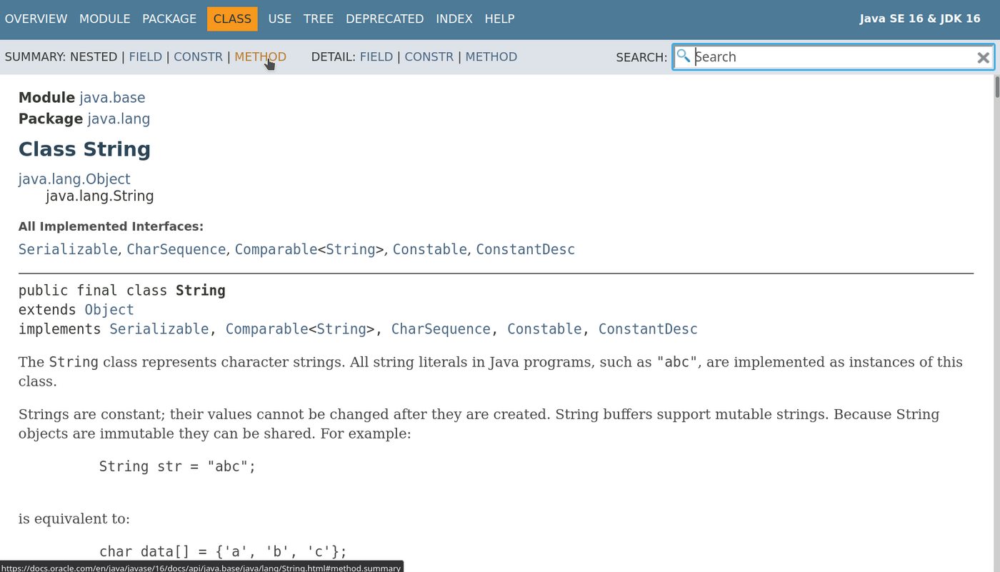
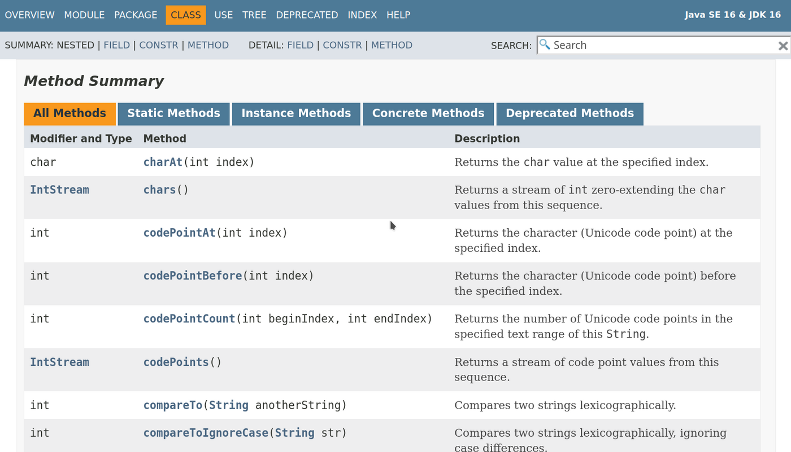

Lektion 1.8 — Teil 1: Grundlagen
Strings & Random
Lernziele
- in der Java-API-Dokumentation Klassen und Methoden nachschlagenAbschnitt 1
- die wichtigsten Methoden der Klasse
Stringanwenden (length,charAt,indexOf,substring,strip,contains, …)Abschnitt 2 - einzelne Zeichen (
char) eines Strings untersuchen und vergleichenAbschnitt 3 - Laufzeitfehler bei zu kurzen oder
null-Strings durch Prüfungen vermeidenAbschnitt 4 - erklären, warum Strings mit
equalsund nicht mit==verglichen werdenAbschnitt 5 - den String-Pool als Besonderheit von
StringbeschreibenAbschnitt 5 - mit
import java.util.RandomPseudo-Zufallszahlen erzeugenAbschnitt 6 - das aktuelle Jahr mit
LocalDateermittelnAbschnitt 6
1 — Die Java-API-Dokumentation
Die Klasse String ist Teil der Java-Bibliothek und enthält zahlreiche nützliche Methoden
zur Bearbeitung und Analyse von Zeichenketten. Alle Strings sind Instanzen dieser Klasse – mit
einigen Besonderheiten, auf die Abschnitt 5 eingeht.
Die verfügbaren Methoden sind in der Java API (Application Programming Interface) Dokumentation aufgelistet, in der alle Klassen der Java-Bibliothek ausführlich beschrieben sind: docs.oracle.com/en/java/javase/25/docs/api.

Rechts oben kann nach Klassen gesucht werden. Wähle java.lang.String oder folge direkt dem
Link java.lang.String.
Zunächst findet sich eine genaue Beschreibung des Zwecks der Klasse – vieles davon wird erst mit
mehr technischem Verständnis hilfreich. Ein Klick auf Method in der Menüleiste führt zur Liste
aller Methoden.


2 — Wichtige String-Methoden
| Methode | Beschreibung | Beispiel mit s = " Karl Maier " |
|---|---|---|
int length() | Länge des Strings | s.length() → 12 |
char charAt(int index) | Zeichen an der Stelle index (erste Stelle hat Index 0!), sofern vorhanden | s.charAt(1) → 'K' |
int indexOf(String str) | Stelle des ersten Vorkommens von str, sonst -1 | s.indexOf("M") → 6 |
boolean contains(String str) | kommt str im String vor? | s.contains("ai") → true |
String substring(int von, int bis) | Teilstring von von (inklusive) bis bis (exklusive) | s.substring(1, 5) → "Karl" |
String strip() / trim() | Leerzeichen am Beginn und Ende werden abgeschnitten (strip seit Java 11, erkennt auch exotischere Leerzeichen) | s.strip() → "Karl Maier" |
String toLowerCase() / toUpperCase() | neuer String nur mit Klein- bzw. Großbuchstaben | s.toUpperCase() → " KARL MAIER " |
String replace(String alt, String neu) | ersetzt jedes Vorkommen von alt durch neu | s.replace(" ", "_") → "_Karl_Maier_" |
boolean isEmpty() | ist der String leer (Länge 0)? | "".isEmpty() → true |
boolean isBlank() | leer oder nur Leerzeichen? (seit Java 11) | " ".isBlank() → true |
boolean equals(Object o) | inhaltlicher Vergleich | "Karl".equals(s.strip()) → false |
Keine dieser Methoden verändert den ursprünglichen String – sie liefern einen neuen.
s.toUpperCase(); allein bewirkt nichts; richtig ist s = s.toUpperCase();.
Methoden lassen sich auch verketten: Jede Methode liefert einen neuen String, auf dem gleich die nächste aufgerufen werden kann.
String s = " Karl Maier ";
String kurz = s.strip().substring(0, 3).toUpperCase(); // "KAR"
int laenge = s.strip().length(); // 103 — Einzelne Zeichen untersuchen
charAt liefert ein einzelnes Zeichen vom Typ char (Lektion 1.4). Hinter jedem
char steht ein Zahlencode: 'A' ist 65, 'B' 66, …,
'a' 97 usw. Die Buchstaben 'A'–'Z', 'a'–'z'
und die Ziffern '0'–'9' liegen jeweils lückenlos hintereinander. Deshalb kann
man char-Werte mit <, <=, >, >=
und == vergleichen:
// liefert true, wenn c eine Ziffer ist
public boolean istZiffer(char c) {
return c >= '0' && c <= '9';
}
// liefert true, wenn der Text mit einem Grossbuchstaben beginnt
public boolean beginntGross(String text) {
if (text != null && text.length() > 0) {
char erstes = text.charAt(0);
return erstes >= 'A' && erstes <= 'Z';
} else {
return false;
}
}
Die Umlaute ('ä', 'Ö', …) und 'ß' liegen nicht in diesen
Bereichen und müssen bei Bedarf einzeln geprüft werden (c == 'ä' || c == 'ö' || …).
Die Klasse Character bietet fertige Methoden wie Character.isLetter(c) oder
Character.isDigit(c) – selbst geschrieben versteht man aber besser, was passiert.
char und String verknüpfen
Wird ein char mit + an einen String gehängt, entsteht ein String. Werden aber zwei
chars addiert, rechnet Java mit den Zahlencodes:
String name = "Karl";
String a = name.charAt(0) + "."; // "K." (char + String = String)
int b = name.charAt(0) + name.charAt(1); // 172 (75 + 97, char + char = int!)
String c = "" + name.charAt(0) + name.charAt(1); // "Ka" (zuerst String, dann anhaengen)
String d = name.substring(0, 1).toUpperCase(); // "K" (Teilstring, kein char)
Für Groß-/Kleinschreibung ist substring oft praktischer als charAt, weil
toUpperCase() und toLowerCase() Methoden von String sind.
4 — Beispiel: Person mit Vor- und Nachnamen
Die folgende Klasse modelliert eine Person mit Vor- und Nachnamen. Neben Konstruktoren und Get-/Set-Methoden enthält sie Methoden, die String-Methoden verwenden.
Person.java Code anzeigen (66 Zeilen)
public class Person {
private String vorname;
private String nachname;
public Person() {
setVorname("Max");
setNachname("Mustermann");
}
public Person(String vorname, String nachname) {
setVorname(vorname);
setNachname(nachname);
}
// Get/Set-Methoden
public String getVorname() {
return vorname;
}
public void setVorname(String vorname) {
if (vorname != null) {
this.vorname = vorname;
} else {
System.out.println("Fehler, vorname ist null");
}
}
public String getNachname() {
return nachname;
}
public void setNachname(String nachname) {
if (nachname != null) {
this.nachname = nachname;
} else {
System.out.println("Fehler, nachname ist null");
}
}
public String gesamterName() {
return vorname + " " + nachname;
}
public int laengeGesamterName() {
return gesamterName().length();
}
public String initialien() {
if (this.vorname.length() > 0 && this.nachname.length() > 0) {
return this.vorname.charAt(0) + ". " + this.nachname.charAt(0) + ".";
} else {
System.out.println("Fehler, Vor- oder Nachname ist leer!");
return "n/a";
}
}
public String kuerzel() {
if (nachname.length() >= 2 && vorname.length() >= 1) {
return nachname.substring(0, 2).toUpperCase() + this.vorname.charAt(0);
} else {
System.out.println("Fehler, kann Kuerzel nicht berechnen.");
return "n/a";
}
}
}laengeGesamterName()gibt die Länge des Strings zurück, dengesamterName()liefert.initialien():charAt(0)liefert jeweils den ersten Buchstaben. Mit+werden diesechars mit". "verknüpft und dabei implizit zu Strings umgewandelt. Vorher muss geprüft werden, ob beide Strings mindestens ein Zeichen haben – sonst liefertcharAt(0)einen Laufzeitfehler.kuerzel()ermittelt ein Kürzel aus drei Großbuchstaben, die ersten zwei vom Nachnamen (Maier, Karl →MAK). Auch hier müssen die Strings lang genug sein.
Generell dürfen die String-Objekte, auf denen Methoden aufgerufen werden, nicht null
sein – sonst NullPointerException. Die Prüfungen in Konstruktoren und Set-Methoden
stellen das für diese Klasse bereits sicher; daher ist != null in den anderen Methoden
nicht mehr nötig, was den Code übersichtlicher macht.
Soll ein Name ohne Leerzeichen am Rand mindestens 2 Zeichen haben, muss zuerst auf
null geprüft werden:
if (name != null && name.strip().length() >= 2). Ist die linke Seite von
&& false, wertet Java die rechte gar nicht mehr aus
(Kurzschlussauswertung) – strip() wird also nie auf null
aufgerufen.
5 — Besonderheiten von String
Neue Strings erzeugt man nicht mit dem Konstruktor (String s = new String("ein Text");),
sondern einfach mit String s = "ein Text";. Im Hintergrund verwaltet Java alle
String-Literale und vermeidet, dass gleiche Werte mehrfach gespeichert werden (String-Pool).
Für Inhaltsgleichheit muss equals verwendet werden. Vielleicht hast du bemerkt, dass auch
== oft zu funktionieren scheint! == prüft bei Referenztypen aber, ob es
sich um dasselbe Objekt handelt, nicht ob der Inhalt gleich ist. Wegen des String-Pools liegt bei
Inhaltsgleichheit oft auch Objektgleichheit vor – aber nicht immer:
String a = "xyz";
String b = "xy";
b += "z";
System.out.println("a: " + a);
System.out.println("b: " + b);
// dieser Stringvergleich funktioniert nicht
System.out.println("a == b: " + (a == b));
System.out.println("a.equals(b): " + a.equals(b));
String c = "xyz";
System.out.println("a: " + a);
System.out.println("c: " + c);
// In diesem Fall liefert auch der ==-Operator das
// gewuenschte Ergebnis
System.out.println("a == c: " + (a == c));
System.out.println("a.equals(c): " + a.equals(c));a: xyz
b: xyz
a == b: false
a.equals(b): true
a: xyz
c: xyz
a == c: true
a.equals(c): true
Durch b += "z"; entsteht ein neues String-Objekt: b hat denselben
Inhalt wie a (equals liefert true), ist aber nicht dieselbe Instanz.
Strings (und alle Objekte) immer mit equals vergleichen. Steht ein Literal
zur Verfügung, schreibe es nach vorne: "Karl".equals(name) stürzt auch dann nicht ab, wenn
name null ist. Einzelne Zeichen (char) sind dagegen primitive Werte
und werden mit == verglichen: c == 'x'.
6 — Die Klasse Random
Random enthält den Zufallszahlengenerator der Java-Bibliothek. Genau genommen sind es
Pseudo-Zufallszahlen: Zahlen mit ähnlichen Eigenschaften wie echte Zufallszahlen, von
ihnen kaum unterscheidbar. Der Computer selbst arbeitet deterministisch, echten Zufall gibt es auf ihm
nicht – für die meisten Zwecke sind Pseudo-Zufallszahlen aber absolut ausreichend.
Um Random zu verwenden, muss die Klasse am Beginn der Datei importiert werden:
import java.util.Random;
public class Wuerfel {
private Random rnd;
public Wuerfel() {
rnd = new Random();
}
public int wuerfeln() {
return rnd.nextInt(6) + 1; // nextInt(6): 0..5, also +1 -> 1..6
}
public double zufallsTemperatur() {
return 50.0 * rnd.nextDouble() - 20.0; // nextDouble(): 0.0 <= x < 1.0
}
public String losnummer() {
// drei zufaellige Ziffern an einen String haengen
return "LOS-" + rnd.nextInt(10) + rnd.nextInt(10) + rnd.nextInt(10);
}
}| Methode | liefert |
|---|---|
nextInt(n) | ganze Zahl von 0 bis n - 1 |
nextDouble() | Kommazahl von 0.0 (inklusive) bis 1.0 (exklusive) |
nextBoolean() | true oder false |
- Für einen Bereich von
abisb:a + rnd.nextInt(b - a + 1), z. B.1 + rnd.nextInt(6)für 1 bis 6. "LOS-" + rnd.nextInt(10) + …: Weil links schon ein String steht, wird jede Zahl angehängt und nicht addiert.
Klassen aus dem Paket java.lang (String, Math, System, …)
sind automatisch verfügbar. Alle anderen – z. B. java.util.Random – müssen
importiert werden. IntelliJ ergänzt den Import mit Alt+Enter.
Das aktuelle Jahr
Ebenfalls importiert werden muss java.time.LocalDate. LocalDate.now() liefert das
heutige Datum, getYear() daraus das Jahr. So muss die Jahreszahl nicht fix im Code stehen:
import java.time.LocalDate;
// ...
int jahr = LocalDate.now().getYear(); // z. B. 2026Projektschritt
Initialen und Kürzel
Der Name eines Mitarbeiters darf jetzt weder null noch leer sein (isBlank()) und wird mit trim() bereinigt. Dazu kommen initialen() („Karl Maier“ → „K. M.“) und kuerzel() (→ „KAR“); print() gibt das Kürzel mit aus. Die JUnit-Tests bekommen eine Methode testStrings.
public void setName(String name) {
// isBlank() liefert true bei "" und bei reinen Leerzeichen
if (name != null && !name.isBlank()) {
this.name = name.trim();
} else {
System.out.println("Fehler: ungueltiger Name: " + name);
this.name = "n/a";
}
}
// "Karl Maier" -> "K. M."
public String initialen() {
int leerzeichen = name.indexOf(" ");
if (leerzeichen > 0 && leerzeichen < name.length() - 1) {
return name.charAt(0) + ". " + name.charAt(leerzeichen + 1) + ".";
} else {
return name.charAt(0) + ".";
}
}
// "Karl Maier" -> "KAR"
public String kuerzel() {
if (name.length() >= 3) {
return name.substring(0, 3).toUpperCase();
} else {
return name.toUpperCase();
}
}@Test
public void testStrings() {
assertEquals("K. M.", m.initialen());
assertEquals("KAR", m.kuerzel());
m.setName(" "); // nur Leerzeichen -> ungueltig
assertEquals("n/a", m.getName());
}📁 Stand nach dieser Lektion: beispiele/1.8/
Häufige Fehler
if (name == "Karl") funktioniert manchmal, manchmal nicht – je nachdem, wie der String entstanden ist.
Immer "Karl".equals(name) bzw. name.equals(…) verwenden (bei Bedarf equalsIgnoreCase).
nachname.substring(0, 2) oder charAt(0) stürzt bei einem leeren oder einbuchstabigen Namen ab.
Vorher die Länge prüfen (length() >= 2). Indizes laufen von 0 bis length() - 1; bei substring ist das Ende exklusiv.
if (name.strip().length() >= 2 && name != null) stürzt ab, wenn name null ist.
Die null-Prüfung muss links von && stehen: name != null && name.strip().length() >= 2.
Nach name.strip(); enthält name immer noch die Leerzeichen.
Strings sind unveränderlich. Das Ergebnis zuweisen: name = name.strip();.
vorname.charAt(0) + nachname.charAt(0) liefert z. B. 154 statt "MM".
char + char addiert die Zahlencodes. Mit einem String beginnen: "" + vorname.charAt(0) + nachname.charAt(0), oder substring(0, 1) verwenden.
cannot find symbol: class Random.
import java.util.Random; an den Anfang der Datei (vor public class) schreiben – IntelliJ ergänzt das mit Alt+Enter.
rnd.nextInt(6) liefert 0 bis 5, rnd.nextInt(5) + 1 nur 1 bis 5.
nextInt(n) liefert Werte von 0 bis n-1. Für 1 bis 6: rnd.nextInt(6) + 1.
Aufgaben
Eine Klasse Student mit Vor- und Nachnamen, Geschlecht (char), Geburtsjahr und Inskriptionsstatus: String-Methoden für Initialen, Doppelnamen und Anrede, Altersberechnung und eine E-Mail-Adresse mit Zufallsziffern.
Quiz
4 Fragen · zum Aufklappen klicken
Frage 1 Was liefert "Spengergasse".substring(2, 5)?
substring(2, 5) liefert die Zeichen an den Positionen 2, 3 und 4: e, n, g.Frage 2 Wie vergleicht man den Inhalt zweier Strings a und b richtig?
== prüft bei Objekten, ob es dasselbe Objekt ist. Wegen des String-Pools stimmt das manchmal zufällig, aber nicht immer. Gleichen Text prüft equals.Frage 3 Welcher Aufruf kann bei String s = ""; abstürzen?
charAt(0) wirft eine StringIndexOutOfBoundsException. Vorher die Länge prüfen!Frage 4 Welche Werte kann new Random().nextInt(6) + 1 liefern?
nextInt(6) liefert eine Zahl von 0 bis 5 (die Obergrenze ist exklusiv). Plus 1 ergibt die Augenzahlen eines Würfels.